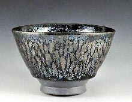
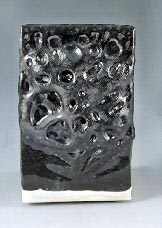
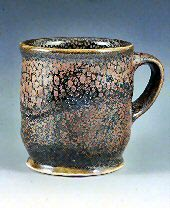
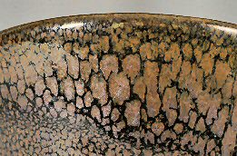
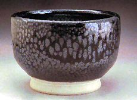
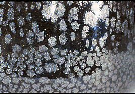
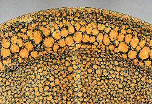
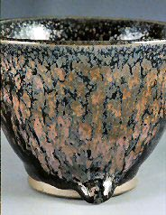
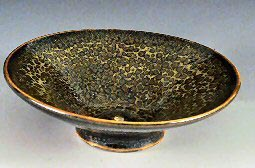
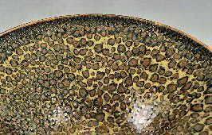

| Oil Spot Glazes
by John Britt
Most ceramics glazes are simple to formulate and very easy to
fire. But there are some glazes and glaze effects that have the
reputation of being elusive or at least difficult to obtain. This
was certainly the case early in the 20th century with copper reds
and celadon blues. These glazes had a history of secrecy and myth
surrounding them. One story even claimed that a Chinese emperor
had slaves thrown into the kiln during the firing in order to produce
the elusive copper red. Thankfully, that was found to be unnecessary,
because we learned that reducing the kiln early in the firing produced
beautiful copper reds. Oil spot glazes also have the reputation
of being elusive but, as I will show in this article, they are very
easy to create, once you know the process which makes them work.
|  |
Oil spot tea bowl, John Britt, 2004, dirty porcelain,
cone 11 gas oxidation,
multi-fired, 4” x 3” x 3”
|
The
most important factor in obtaining oil spot glazes is firing in
an oxidation atmosphere. This cannot be overemphasized. Oxidation
is essential because of the mechanism by which the oil spots are
created. Simply stated, the red iron oxide molecule, Fe2O3,
will let go of an oxygen atom at approximately 2250° F (1232°
C). At this temperature, the red iron oxide molecule cannot maintain
its complex structure and will release an oxygen atom to become
the simpler FeO molecule, or black iron oxide. As the oxygen leaves
the red iron oxide molecule it bubbles to the surface of the molten
glaze, dragging a bit of iron with it (image on left). When it reaches
the surface and leaves the glaze it deposits the “spot”
of iron which creates the characteristic oil spot look. However,
if the glaze is reduced early in the firing cycle, the red iron
oxide will already have changed into black iron oxide, and there
is no possibility of an oxygen molecule being released later to
create the oil spot effect. So you can see that without an oxidation
firing cycle there will be no oil spot effect.
The second most important factor is the glaze recipe. It must contain
some red iron oxide and be sufficiently stiff to hold the oil spots
that are created, but not too stiff to prevent the bubbling out
of the oxygen. Feldspathic bases are perfectly suited to create
oil spots. The following are some excellent recipes:
Bailey’s Oil Spot Cone 10/11
(images 1& 2)
|
|
| 25.51 Custer Feldspar
35.71 NC-4 (Soda Feldspar)
15.30 EPK Kaolin
5.10 Talc
5.10 Dolomite
5.10 Ferro Frit 3110
8.16 Silica
6.00 Red Iron Oxide |
|
| |
|
|  |
 |
| 1. Cup, John Britt, 2003, Bailey’s
Oil Spot, Grolleg porcelain, cone 11 oxidation, 5” x 4”
x 4” |
2. Detail of Cup, John Britt, 2003, Bailey’s
Oil Spot, Grolleg porcelain, cone 11 gas oxidation, 5”
x 4” x 4” |
John’s Oil Spot #3 Cone 10/11
(Works nicely in electric kilns)
(images 3 & 4) |
|
|
54.62 NC-4 (Soda Feldspar)
29.41 Silica
4.20 Whiting
7.56 EPK Kaolin
4.20 Dolomite
6.72 Red Iron Oxide
4.20 Cobalt Carbonate |
|
|

|
 |
| 3. Cup 2, John Britt, 2002, Grolleg porcelain,
cone 10 electric oxidation, 4” x 3” x 3” |
4. Detail of Cup 2, John Britt, 2002, Grolleg
porcelain, cone 10 electric oxidation, 4” x 3” x
3” |
| |
|
| Traditional Oil Spot Cone 10/11 |
Montmollin Oil Spot Cone 10/11 |
80.18 Custer Feldspar
5.66 Silica
3.77 Whiting
4.71 Talc
5.66 Bone Ash
8.50 Red Iron Oxide
|
68.40 F-4 (Soda feldspar)
17.80 Silica
4.90 EPK Kaolin
8.90 Talc
7.11 Red Iron Oxide
2.00 Cobalt Carbonate
|
Each recipe contains a high amount of feldspar, over 50%, some
magnesium oxide, either from talc or dolomite, and between 6.0 -
8.5% red iron oxide. Finally, the glaze needs to be fired between
cone 10 and 11, which I will discuss later.
Another critical factor is the glaze application. If the application
is not thick enough there will be no oil spotting or only very small
spots, while thicker application will give larger spots (see image
5). The final glaze thickness should be at least 1/8” (0.3
cm) and can be as thick as 1/4” (0.6 cm). Usually if you apply
a glaze this thick it will run and fuse the pot to the shelf. But
this does not happen as frequently with oil spot glazes because
the feldspathic glaze is so stiff and, in addition, when iron is
fired in oxidation it is refractory which makes the glaze even more
viscous. This often results in a characteristic hanging glaze drip
at the base of the pot (see image 6).
|  |
 |
| 5. Detail of Oil spot glaze application - thick
and thin, John Britt, 2004 |
6. Tea bowl, John Britt, 2004, Dirty Porcelain,
cone 11 gas oxidation, 3” x 3” x 3” |
So to summarize, oil spot glazes are usually stiff glazes which
contain red iron oxide and magnesium oxide. The glaze needs to be
applied thick and fired in oxidation to cone 10 or 11. If you follow
these simple steps then oil spot glazes are no more mysterious or
illusive than any other type of glaze. The hurdle that many people
run into is that they want to fire all their work with a standard
early reduction firing cycle. They then put some oil spot test tiles
into this firing cycle, only to be disappointed. Since early reduction
changes the iron they get no oil spots and think it is a difficult
glaze to achieve. But simply switching to an oxidation cycle is
all that is necessary.
Once you know the mechanism which causes the oil spot effect then
producing it is actually quite easy. The difficult but fun part
is then creating variations in the effect and creating forms which
accentuate those effects. For example, you can alter the size of
the spots by varying the length of time it takes to fire from cone
7 to cone 11. If you go slowly, (4 hours), the spots will be larger,
while going faster will give you smaller spots. This is because
the process of releasing oxygen takes time and lengthening the firing
will allow more oxygen to be released, while firing too fast may
leave large unhealed blisters on the surface of the glaze. (This
can be corrected simply by refring the piece.) You can use a slightly
more complicated firing cycle to reduce these unhealed blisters.
In this firing cycle the kiln is in full oxidation to cone 9 and
is then is put into reduction through cone 11. This will help to
stop the bubbling and flux out the surface iron creating a smoother
glaze surface. Draw tiles are extremely helpful to determine when
the firing is complete.
Another interesting variation is the “hare’s fur”
effect. This can easily be created by firing the glazes very hot,
above cone 11, which causes the glaze to run down the side of the
pot, pulling and lengthening the spots. Another interesting variation
is to put a stiff light colored glaze over the oil spot glaze. This
will cause an interesting leopard spotted glaze as the iron is drawn
to the surface (images 7 & 8). These are only a few of the innumerable
variations possible with oil spot glazes.
|  |
 |
7. Incense Burner, John Britt, 2003, Grolleg
Porcelain, Bailey’s Oil Spot with yellow glaze over, cone
11 gas oxidation, 3” x 4” x 4”
|
8. Incense Burner detail, John Britt, 2003,
Grolleg Porcelain, Bailey’s Oil Spot
with yellow glaze over, cone 11 gas oxidation, 3” x 4”
x 4” |
From this article you can see how simple it is to achieve the oil
spot effect. And knowing the process by which it works eliminates
the need to perform any brutal sacrificial rituals on your assistants.
Hopefully, you can use this knowledge as a spring board to create
new and beautiful variations of this ancient glaze.
Article and images courtesy John
Britt. © John Britt 2004. See
more of John's work at his website http://www.johnbrittpottery.com.
John has also got a new book out: The Complete Guide to High-Fire
Glazes: Glazing and Firing at Cone 10, Lark Books, 2004. ISBN:
1579904254.
More Articles
|